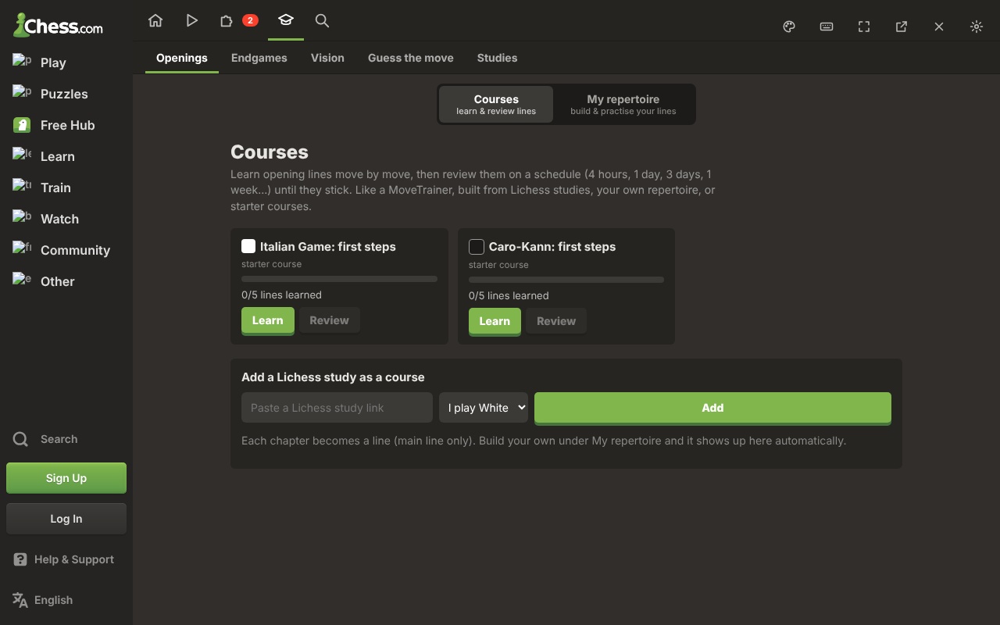

Game Review on chess.com. Free. Unlimited.
Accuracy, best moves, a coach that explains every mistake, unlimited puzzles and opening courses, right inside chess.com. Powered by Lichess and Stockfish.

Everything Diamond has, without paying
It adds a Free Hub and review buttons to chess.com. Your games stay where you play them.
Game Review
Accuracy, Brilliant / Great / Best / Blunder labels like chess.com's, an eval graph and arrows for the move you should have played.
Coach + "Why?"
Plain-English explanations, and a best line played out up to 10 moves or until checkmate.
Unlimited puzzles
Themes, a rating, Puzzle Rush and Storm. Your own blunders come back as puzzles.
Opening courses
Spaced repetition, your own repertoire, and practice against the moves real players choose.
Scout opponents
See what they play and where they struggle, then turn it into a prep course.
Track your progress
Every reviewed game in one list, with your accuracy over time and your weakest openings.
Fast, even offline
Lichess's servers when available, otherwise Stockfish 18 on all your CPU cores. No limits.
Fair play built in
All analysis tools lock automatically while you're in a live game.
Better with friends
Share and compete without accounts: just a nickname, if you want one.
Share a review
One click gives a link to your Game Review. Anyone can open it, even without the add-on, and you can step through it together.
Daily challenge
The same puzzle for everyone each day, with a scoreboard of your friends' times.
Weekly league
Points for puzzles, reviewed games and days you trained. A new league every Monday.
Puzzle duels
Send any puzzle to a friend and see who solves it fastest.
Share courses
Send an opening course as a link. Your friend adds it with one paste.
5 languages
English, Nederlands, Français, Deutsch and Español, in the add-on and on this page.
Have a look
Swipe or scroll →




Install in a minute
Then open any game on chess.com and press Free Review.
🦊 Firefox
Desktop and Android. Updates itself.
Install for Firefox- Click the button and choose Continue to installation.
- Click Add.
- Open chess.com. Done.
🌐 Chrome, Edge, Brave, Opera
Installed by hand, takes about 2 minutes. Desktop only.
Download for ChromeThen follow the guide below ↓
Chrome install guide
-
Download the zip
Click Download for Chrome above. You get a file called
freechess.com-chrome-6.30.0.zipin your Downloads folder. -
Unzip it into a folder you'll keep
Open your Downloads folder, right-click the zip and choose Extract All… Change the location to something permanent, for example
Documents\freechess, then click Extract.Open your Downloads folder in Finder and double-click the zip. A folder appears next to it. Drag that folder somewhere permanent, for example Documents.
Run
unzip freechess.com-chrome-*.zip -d ~/freechess, or right-click the zip and choose Extract. On ChromeOS, open the zip in Files and copy its contents into a new folder under My files.⚠️ Don't delete or move this folder afterwards. Chrome runs the add-on straight from it. Loading the.zipitself doesn't work, it must be unzipped.📁freechessmanifest.json · background.js · icons · …Check: the folder you pick in step 4 must contain
manifest.jsondirectly, not another folder inside it. -
Open the extensions page and turn on Developer mode
Paste this into the address bar and press Enter:
chrome://extensionsEdge:
edge://extensions· Brave:brave://extensions· Opera:opera://extensions. You can't click these links, browsers block that; paste them.Turn on the Developer mode switch, top right (in Edge it's on the left).
-
Click "Load unpacked" and pick the folder
A new row of buttons appears. Click Load unpacked, select the freechess folder from step 2 and click Select Folder.
freeChess.com now shows in the list. Click the 🧩 puzzle icon next to the address bar and the 📌 pin, so it's always visible.
-
Open chess.com
Go to chess.com (reload it if it was already open), open a finished game and press Free Review. The Free Hub is in chess.com's left menu.
Updating on Chrome
The add-on tells you when a big update is out.
- Download the new zip and unzip it over the same folder (choose "Replace" when asked).
- Open
chrome://extensionsand click the ↻ reload arrow on freeChess.com. - Your progress and settings stay.
Something wrong?
"Manifest file is missing or unreadable"
You picked the wrong folder: probably the one around it. Open the folders until you see manifest.json, and select that folder.
Chrome shows "Disable developer mode extensions"
That's a normal warning for add-ons not from the Chrome store. Click the ✕ to close it (don't click Disable).
The add-on vanished or says "Errors"
The folder was moved, deleted or only partly replaced. Unzip it again in the same place and click ↻ reload. If it still fails, click Remove and do steps 2–4 again.
Nothing shows on chess.com
Reload the chess.com tab once after installing. Check the add-on is switched on in chrome://extensions.
Phone or tablet?
Chrome on Android and iPhone doesn't support add-ons. On Android, use Firefox and the Firefox button above.
What's new
📱 On your phone
Scan this with your phone's camera, then open it in Firefox for Android and tap Install.

🗂 All versions
The newest is at the top. Firefox updates itself; this list is for going back if a new version has a problem.
- Loading…
Questions
Is it really free?
Yes. The analysis comes from Lichess, which is free and open source, with Stockfish running on your own computer as a backup.
Is it allowed / fair play?
Everything locks while you're in a live game, and there's an optional mode that hides the add-on completely during games. It only helps with finished games and training.
What happens to my data?
It stays in your browser. Optional sync uses your own Lichess account, encrypted with your own password. No analytics, no ads.
How do I update on Chrome?
Download the new zip, unzip it over the same folder, and click the reload arrow on the add-on in chrome://extensions.